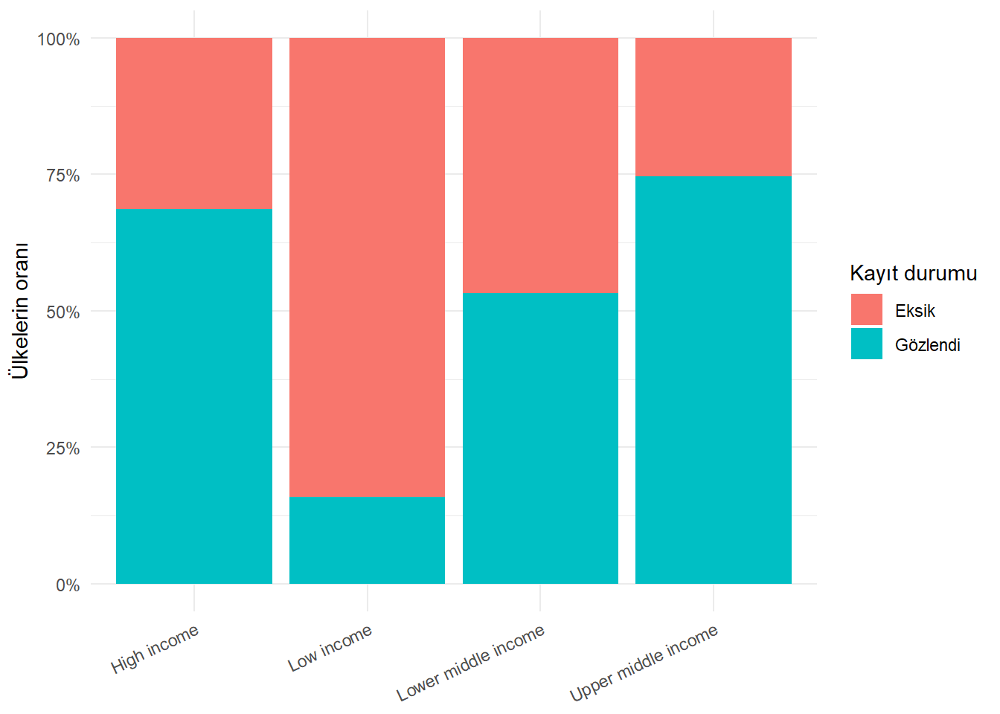
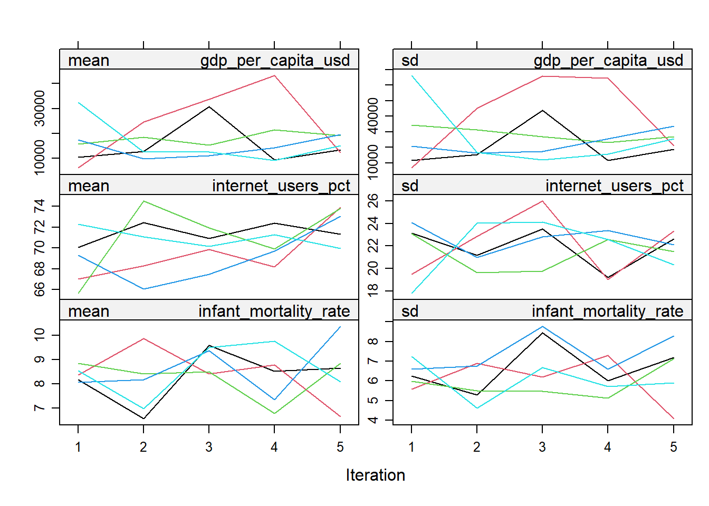

library(dplyr)
library(tidyr)
library(ggplot2)
countries <- readr::read_csv(
"data/countries.csv",
show_col_types = FALSE
)
indicator_dictionary <- readr::read_csv(
"data/indicator_dictionary.csv",
show_col_types = FALSE
)15 Eksik Veriler ve İmputasyon
Eksik veri, bir hücrede değer bulunmamasından daha geniş bir sorundur. Bir değerin neden gözlenmediği, eksikliğin hangi gözlem ve değişkenlerde yoğunlaştığı ve uygulanan yöntemin sonuçları nasıl değiştirdiği birlikte düşünülmelidir. Bu nedenle eksik veri analizi yalnızca NA değerlerini bulup doldurma işi değildir.
Bu bölümde kitapla birlikte gelen Dünya Bankası göstergelerini kullanacağız. countries.csv dosyası 2019 yılına ait 217 ülke ve ekonomiyi içerir. Bazı göstergeler bütün ülkelerde gözlenirken yükseköğretime kayıt, yatırım veya işsizlik gibi göstergelerde daha fazla eksiklik vardır. Bu farklılık, eksikliği gerçek bir veri kalitesi problemi olarak incelememize olanak verir.
Bu bölümün sonunda:
- R’de
NA,NaNveNULLyapılarını ayırt edebilecek, - eksiklik miktarını ve örüntülerini özetleyebilecek,
- MCAR, MAR ve MNAR mekanizmalarının ne söylediğini açıklayabilecek,
- silme ile imputasyon seçeneklerinin sonuçlarını karşılaştırabilecek,
- ortalama, medyan, mod ve grup temelli imputasyon uygulayabilecek,
- kNN, regresyon ve çoklu imputasyonun temel mantığını anlayabilecek,
- imputasyonun ortalama, varyans, korelasyon ve belirsizlik üzerindeki etkisini değerlendirebilecek,
- modelleme sırasında veri sızıntısını önleyecek bir sıra kurabileceksiniz.
Eksik veri yöntemlerinin kuramsal çıkış noktası, gözlenmeyen değeri “boş hücre” değil, veri üretim sürecinin bir parçası olarak ele almaktır. Eksik veri kuramının modern çerçevesi, eksikliğin oluşma olasılığı ile gözlenen ve gözlenmeyen değerler arasındaki ilişkiyi ayırır (Little ve Rubin 2019; Schafer ve Graham 2002). Bu ayrım yöntem seçimini doğrudan etkiler: aynı eksiklik oranı, tamamen rassal kayıt kaybında başka; düşük gelirli katılımcıların gelir sorusunu yanıtsız bırakmasında başka bir sorundur.
ÖnemliEksik değer bilinmeyen bir gerçektir
İmputasyon, eksik hücrenin gerçek değerini ortaya çıkarmaz. Gözlenen bilgiler ve varsayımlar yardımıyla makul bir değer ya da değerler üretir. İmpute edilen değer bu nedenle ölçülmüş bir gözlem gibi yorumlanmamalıdır.
15.1 Proje Verisini Hazırlamak
Önce 2019 ülke kesitini ve gösterge sözlüğünü okuyalım.
Veri sözlüğü, değişken adının ötesinde birim, özgün Dünya Bankası gösterge kodu, açıklama, kapsanan ülke sayısı ve eksiklik oranı gibi bilgiler taşır.
indicator_dictionary |>
filter(indicator %in% c(
"school_enrollment_tertiary_pct",
"internet_users_pct",
"life_expectancy_total"
)) |>
select(
indicator,
wdi_code,
unit,
first_year,
last_year,
countries_covered,
missing_pct
)Bu adım önemlidir. Örneğin school_enrollment_tertiary_pct değişkeninin bir oran olduğu bilinmeden 143.9 gibi bir değer hatalı sanılabilir. Oysa brüt kayıt oranlarında yaş grubunun dışında kalan öğrenciler de paya dahil olabildiği için değer 100’ü aşabilir. Veri sözlüğü, eksiklik ve sıra dışılık kararlarının bağlamını sağlar.
15.2 R’de Eksiklik Nasıl Temsil Edilir?
NA: gözlenmeyen değer
R’de sıradan eksik değer NA ile gösterilir. NA, sayısal, metinsel, mantıksal veya tarih türünde olabilir.
c(10, 20, NA, 40)[1] 10 20 NA 40c("A", NA_character_, "C")[1] "A" NA "C"c(TRUE, NA, FALSE)[1] TRUE NA FALSENA ile aritmetik işlem yapıldığında sonuç çoğunlukla yine NA olur; çünkü bilinmeyen bir değerin hesaba katkısı bilinmez.
mean(c(10, 20, NA, 40))[1] NAmean(c(10, 20, NA, 40), na.rm = TRUE)[1] 23.33333na.rm = TRUE, eksik değerleri ortalamaya dahil etmez. Bu bir imputasyon değildir: veri setindeki NA değişmeden kalır, yalnızca ilgili hesaplama gözlenen değerlerle yapılır.
NaN: tanımsız sayısal sonuç
NaN, İngilizce Not a Number ifadesinden gelir ve tanımsız bir sayısal işlemin sonucudur.
0 / 0[1] NaNsqrt(-1)[1] NaNis.nan(0 / 0)[1] TRUEis.na(0 / 0)[1] TRUEHer NaN aynı zamanda is.na() açısından eksik sayılır; fakat her NA, NaN değildir.
NULL: nesnenin veya bileşenin yokluğu
NULL, uzunluğu sıfır olan bir yapıdır. Bir veri hücresindeki eksik değerden çok bir nesnenin ya da liste bileşeninin bulunmamasını anlatır.
length(NULL)[1] 0length(NA)[1] 1ornek_liste <- list(ad = "Türkiye", deger = NULL)
ornek_liste$ad
[1] "Türkiye"
$deger
NULLBir veri çerçevesi sütununa NULL atamak o sütunu silebilir. Bu nedenle NULL, tablo hücresindeki eksikliğin yerine kullanılmamalıdır.
Özel eksiklik kodları
Kaynak dosyalarda eksiklik "..", "-", "bilinmiyor", boş metin veya 9999 gibi değerlerle kodlanabilir. R bunları kendiliğinden eksik saymaz.
ham_degerler <- c("42", "..", "", "9999", "58")
readr::parse_double(
ham_degerler,
na = c("..", "", "9999")
)[1] 42 NA NA NA 589999 yalnızca veri sözlüğünde eksiklik kodu olarak tanımlanmışsa NA yapılmalıdır. Gerçek bir ölçüm olabilecek değeri tahmin ederek eksik saymak veri kaybına yol açar.
15.3 Eksikliği Ölçmek
İlk soru “kaç eksik değer var?”dır. Ancak sayı tek başına yeterli değildir; payda da bilinmelidir.
eksik_ozet <- countries |>
summarise(
across(
everything(),
list(
sayi = ~ sum(is.na(.x)),
oran = ~ mean(is.na(.x))
)
)
) |>
pivot_longer(
everything(),
names_to = c("degisken", ".value"),
names_pattern = "(.*)_(sayi|oran)$"
) |>
arrange(desc(oran))
eksik_ozet |>
filter(sayi > 0) |>
slice_head(n = 12)mean(is.na(.x)) işe yarar; çünkü mantıksal değerler hesaplamada TRUE = 1, FALSE = 0 olarak değerlendirilir. Böylece eksik hücrelerin oranı elde edilir.
Gözlem bazında eksiklik
Bazı ülkelerde tek bir gösterge, bazılarında çok sayıda gösterge eksik olabilir.
sayisal_gostergeler <- countries |>
select(-country, -country_code, -region, -income_group, -year)
ulke_eksikligi <- countries |>
transmute(
country,
region,
income_group,
eksik_sayisi = rowSums(is.na(sayisal_gostergeler)),
eksik_orani = eksik_sayisi / ncol(sayisal_gostergeler)
) |>
arrange(desc(eksik_sayisi))
ulke_eksikligi |>
slice_head(n = 10)Bu tablo “çok eksiği olan ülkeyi silelim” sonucuna otomatik olarak götürmemelidir. Eksiklik belirli bölge veya gelir gruplarında yoğunlaşıyorsa silme, örneklemin temsil yapısını değiştirebilir.
Eksiklik örüntüleri
Değişkenlerin birlikte eksik olup olmadığını görmek, veri toplama sürecine ilişkin ipuçları verir.
countries |>
transmute(
gdp_eksik = is.na(gdp_per_capita_usd),
internet_eksik = is.na(internet_users_pct),
okul_eksik = is.na(school_enrollment_tertiary_pct),
issizlik_eksik = is.na(unemployment_total_pct)
) |>
count(gdp_eksik, internet_eksik, okul_eksik, issizlik_eksik) |>
arrange(desc(n))Her satır bir eksiklik örüntüsüdür. Örneğin yükseköğretim verisi eksikken internet verisinin gözlenmesi ile her ikisinin birden eksik olması farklı toplama süreçlerine işaret edebilir.
Eksiklik gruplara göre değişiyor mu?
countries |>
group_by(income_group) |>
summarise(
ulke_sayisi = n(),
internet_eksik_orani = mean(is.na(internet_users_pct)),
okul_eksik_orani = mean(is.na(school_enrollment_tertiary_pct)),
.groups = "drop"
) |>
arrange(desc(okul_eksik_orani))Eksiklik oranlarının gelir grubuna göre farklılaşması, eksikliğin gözlenen bir değişkenle ilişkili olabileceğini düşündürür. Bu bulgu tek başına mekanizmayı kanıtlamaz; fakat yöntem seçiminde grup bilgisinin yararlı olabileceğini gösterir.
countries |>
mutate(
okul_durumu = if_else(
is.na(school_enrollment_tertiary_pct),
"Eksik",
"Gözlendi"
)
) |>
count(income_group, okul_durumu) |>
group_by(income_group) |>
mutate(oran = n / sum(n)) |>
ggplot(aes(x = income_group, y = oran, fill = okul_durumu)) +
geom_col() +
scale_y_continuous(labels = scales::label_percent()) +
labs(
x = NULL,
y = "Ülkelerin oranı",
fill = "Kayıt durumu"
) +
theme_minimal() +
theme(axis.text.x = element_text(angle = 25, hjust = 1))
15.4 Eksiklik Mekanizmaları: MCAR, MAR ve MNAR
Eksiklik mekanizması, bir değerin eksik kalma olasılığının hangi bilgilerle ilişkili olduğunu açıklar. Üçlü ayrım yöntem seçiminin temelidir.
Mekanizmaları biçimsel olarak tanımlamak, günlük dildeki “rassal” sözcüğünün yaratabileceği belirsizliği azaltır. Tam veri matrisini (Y), gözlenen kısmını (Y_{obs}), gözlenmeyen kısmını (Y_{mis}) ile gösterelim. Her hücre için (R=1) değerin gözlendiğini, (R=0) eksik olduğunu göstersin. Eksiklik mekanizması,
\[ P(R \mid Y_{obs}, Y_{mis}, \psi) \]
olasılığıyla tanımlanır; (), eksiklik sürecinin parametrelerini temsil eder. Sınıflandırma, bu olasılığın hangi bilgiye bağlı olduğuna göre yapılır (Little ve Rubin 2019).
MCAR: tamamen rassal eksiklik
MCAR (Missing Completely At Random), eksik kalma olasılığının hem gözlenen hem de gözlenmeyen değerlerden bağımsız olmasıdır.
\[ P(R \mid Y_{obs}, Y_{mis}, \psi) = P(R \mid \psi) \]
Örneğin bazı anket formlarının depodaki su baskınında rastgele zarar gördüğünü düşünelim. Formların kaybı katılımcıların gelirinden, yaşından veya yanıtlarından bağımsızsa MCAR varsayımı makul olabilir.
MCAR altında tam gözlemler, başlangıç örnekleminin rassal bir alt kümesi gibi davranır. Bununla birlikte gözlem kaybı standart hataları büyütür ve istatistiksel gücü azaltır.
MAR: gözlenen bilgilere bağlı eksiklik
MAR (Missing At Random), eksik kalma olasılığının gözlenen değişkenlerle açıklanabildiğini varsayar. Adındaki “rassal” sözcüğü eksikliğin tamamen nedensiz olduğu anlamına gelmez.
\[ P(R \mid Y_{obs}, Y_{mis}, \psi) = P(R \mid Y_{obs}, \psi) \]
Örneğin yükseköğretime kayıt göstergesinin düşük gelirli ülkelerde daha sık eksik olduğunu; fakat aynı gelir grubu içindeki eksikliğin gerçek kayıt oranına ayrıca bağlı olmadığını varsayalım. Gelir grubu gözlendiği için uygun bir imputasyon modeline dahil edilebilir.
MAR varsayımı, eksikliği açıklayan ilgili gözlenen değişkenlerin modele alınmasını gerektirir. Önemli bir yardımcı değişken dışarıda bırakılırsa varsayım daha az savunulabilir hale gelir.
MAR, “eksiklik tamamen tesadüfidir” demek değildir. Örneğin gelir yanıtlamama olasılığı yaş ve meslekle değişebilir. Yaş ile meslek gözlenmiş ve imputasyon modeline alınmışsa, aynı yaş ve meslek düzeyindeki kişilerin gözlenmeyen gelirlerinin yanıt olasılığına ek bilgi taşımadığı varsayılır. Varsayımın savunulabilirliği, yalnızca veri tablosundan değil veri toplama sürecinden gelir.
MNAR: gözlenmeyen değerin kendisine bağlı eksiklik
MNAR (Missing Not At Random), gözlenen değişkenler hesaba katıldıktan sonra bile eksiklik olasılığının eksik kalan değerin kendisiyle veya gözlenmeyen başka bilgilerle ilişkili olmasıdır.
Örneğin işsizlik oranı çok yüksek olan ülkelerin bu değeri raporlamama olasılığı daha fazlaysa ve bu davranış gözlenen diğer değişkenlerle tam açıklanamıyorsa MNAR söz konusudur.
MNAR problemi yalnızca gözlenen veriyle bütünüyle çözülemez. Veri toplama süreci, dış kaynaklar, uzman görüşü ve farklı varsayımlar altında duyarlılık analizleri gerekir.
Biçimsel olarak MNAR altında (P(R Y_{obs}, Y_{mis}, )) ifadesi (Y_{mis})’e bağlı kalır. Bu durumda yalnızca gözlenen veriye dayalı standart imputasyon modeli eksiklik sürecini bütünüyle açıklayamaz. Seçim modelleri, örüntü-karışım modelleri veya duyarlılık analizi gibi ek varsayımlar gerekebilir. MNAR analizinde sonuçların tek bir modele değil, makul varsayım aralıklarına göre raporlanması bu yüzden önemlidir (Little ve Rubin 2019; van Buuren 2018).
MAR altında eksiklik mekanizmasının yok sayılabilmesi için MAR tek başına yeterli değildir; veri modeli ile eksiklik modeli parametrelerinin birbirinden ayrı olması gibi “ayırt edilebilirlik” koşulları da gerekir. Bu teknik ayrıntı, MAR’ın gözlenen veriden kanıtlanan bir gerçek değil, analiz modelinin ve veri toplama bilgisinin birlikte savunduğu bir varsayım olduğunu hatırlatır.
| Mekanizma | Eksiklik olasılığı neyle ilişkili? | Temel sonuç |
|---|---|---|
| MCAR | Ne gözlenen ne gözlenmeyen değerlerle | Tam gözlem analizi yanlı olmayabilir; verim kaybeder |
| MAR | Gözlenen değişkenlerle | İlgili gözlenen değişkenleri kullanan modeller gerekir |
| MNAR | Eksik değerin kendisi veya gözlenmeyen bilgilerle | Ek varsayım ve duyarlılık analizi gerekir |
DikkatMekanizma etiketi veriden otomatik çıkmaz
Bir test MCAR varsayımına karşı kanıt sunabilir; ancak MAR ile MNAR’ı yalnızca gözlenen hücrelerden kesin biçimde ayırmak genellikle mümkün değildir. Mekanizma kararı veri üretim süreci ve konu bilgisiyle savunulmalıdır.
15.5 Silme Yöntemleri
Tam gözlem analizi
İlgili bütün değişkenleri gözlenen satırlarla sınırlamaya tam gözlem analizi veya liste bazında silme denir.
analiz_verisi <- countries |>
select(
country,
income_group,
life_expectancy_total,
gdp_per_capita_usd,
internet_users_pct,
infant_mortality_rate
)
tam_veri <- analiz_verisi |>
drop_na()
c(
baslangic = nrow(analiz_verisi),
tam_gozlem = nrow(tam_veri),
kayip = nrow(analiz_verisi) - nrow(tam_veri)
) baslangic tam_gozlem kayip
217 182 35 Tam gözlem analizi basit ve şeffaftır. MCAR altında nokta tahminleri yanlı olmayabilir; fakat örneklem küçülür. MAR veya MNAR altında kalan gözlemler sistematik biçimde farklıysa sonuç yanlı olabilir.
Mevcut çiftlerle hesaplama
Bazı fonksiyonlar her korelasyonu o değişken çifti için mevcut gözlemlerle hesaplayabilir.
kor_verisi <- countries |>
select(
gdp_per_capita_usd,
internet_users_pct,
school_enrollment_tertiary_pct,
life_expectancy_total
)
cor(kor_verisi, use = "pairwise.complete.obs") gdp_per_capita_usd internet_users_pct
gdp_per_capita_usd 1.0000000 0.5951044
internet_users_pct 0.5951044 1.0000000
school_enrollment_tertiary_pct 0.3771755 0.6687729
life_expectancy_total 0.6030480 0.8397611
school_enrollment_tertiary_pct
gdp_per_capita_usd 0.3771755
internet_users_pct 0.6687729
school_enrollment_tertiary_pct 1.0000000
life_expectancy_total 0.6629911
life_expectancy_total
gdp_per_capita_usd 0.6030480
internet_users_pct 0.8397611
school_enrollment_tertiary_pct 0.6629911
life_expectancy_total 1.0000000Bu yaklaşım daha fazla gözlem kullanır; ancak her hücre farklı ülke kümesine dayanabilir. Ortaya çıkan korelasyon matrisi tek bir ortak örneklemi temsil etmez ve bazı durumlarda matematiksel olarak tutarsız olabilir.
Değişkeni çıkarmak
Eksikliği çok yüksek bir değişken bazen analizden çıkarılabilir. Ancak sabit bir “%30 eksikse sil” kuralı yoktur. Değişkenin araştırma sorusundaki önemi, eksikliğin nedeni, yerine geçebilecek bilgi ve elde kalan örneklem birlikte değerlendirilmelidir.
15.6 Basit İmputasyon Yöntemleri
Ortalama ile imputasyon
internet_ortalama <- mean(
countries$internet_users_pct,
na.rm = TRUE
)
countries_ortalama <- countries |>
mutate(
internet_users_pct_imp = if_else(
is.na(internet_users_pct),
internet_ortalama,
internet_users_pct
)
)Ortalama imputasyonu toplam ortalamayı korur gibi görünür; fakat bütün eksik gözlemleri aynı noktaya yığar. Bu, değişkenin varyansını küçültür ve diğer değişkenlerle ilişkisini zayıflatabilir.
Medyan ile imputasyon
internet_medyan <- median(
countries$internet_users_pct,
na.rm = TRUE
)
countries_medyan <- countries |>
mutate(
internet_users_pct_imp = coalesce(
internet_users_pct,
internet_medyan
)
)Medyan aykırı değerlere karşı ortalamadan daha dayanıklıdır. Ancak o da eksik gözlemler için belirsizliği yansıtmaz ve dağılımı tek noktada yoğunlaştırır.
Mod ile imputasyon
Mod, en sık görülen kategoridir. Base R’deki mode() istatistiksel modu hesaplamadığı için küçük bir yardımcı fonksiyon tanımlayalım.
istatistiksel_mod <- function(x) {
gozlenen <- x[!is.na(x)]
frekans <- table(gozlenen)
names(frekans)[which.max(frekans)]
}
gelir_grubu_ornek <- countries$income_group
gelir_grubu_ornek[c(4, 25, 80)] <- NA
mod_degeri <- istatistiksel_mod(gelir_grubu_ornek)
gelir_grubu_imp <- ifelse(
is.na(gelir_grubu_ornek),
mod_degeri,
gelir_grubu_ornek
)
table(gelir_grubu_imp)gelir_grubu_imp
High income Low income Lower middle income Upper middle income
87 25 47 58 Mod imputasyonu çoğunluk kategorisini daha da büyütür. Kategorik eksikliğin kendi başına bilgi taşıdığı durumlarda açık bir "Bilinmiyor" düzeyi daha anlamlı olabilir.
Grup temelli imputasyon
Ülkelerin internet kullanım oranları gelir grubuna göre belirgin biçimde değişir. Bütün ülkeler için tek medyan yerine grup medyanı kullanmak bu gözlenen yapıyı kısmen koruyabilir.
countries_grup <- countries |>
group_by(income_group) |>
mutate(
internet_group_median = median(
internet_users_pct,
na.rm = TRUE
),
internet_users_pct_imp = coalesce(
internet_users_pct,
internet_group_median
)
) |>
ungroup()
countries_grup |>
filter(is.na(internet_users_pct)) |>
select(
country,
income_group,
internet_group_median,
internet_users_pct_imp
) |>
slice_head(n = 10)Bu yaklaşım tek merkez kullanmaktan daha bağlamsaldır; fakat grup içindeki bütün eksik değerlere yine aynı sayı verilir. Ayrıca grup bilgisi sonuç değişkeninden veya gelecekte bulunmayacak bir kaynaktan geliyorsa kullanılamaz.
15.7 Basit İmputasyon İstatistikleri Nasıl Değiştirir?
Ortalama imputasyonunun varyansı neden küçülttüğü cebirsel olarak görülebilir. (n_o) gözlenen değerin ortalaması (x_o), örnek varyansı (s_o^2) olsun; toplam (n-n_o) eksik değerin her biri (x_o) ile doldurulsun. Doldurulan değerlerin merkezden sapması sıfır olduğu için kareler toplamına hiçbir katkıları yoktur. Tamamlanmış serinin varyansı
\[ s_{imp}^{2}=\frac{n_o-1}{n-1}s_o^2 \]
olur. (n>n_o) olduğundan çarpan 1’den küçüktür. Bu azalma verinin gerçekten daha homojen olmasından değil, belirsiz hücrelere yapay olarak sıfır sapma verilmesinden kaynaklanır. Aynı değer başka değişkenlerin farklı düzeylerinde tekrarlandığı için kovaryans ve regresyon ilişkileri de zayıflayabilir. Basit imputasyonun standart hataları fazla iyimser göstermesinin temel nedeni, impute edilen değerleri biliniyormuş gibi kabul etmesidir (Little ve Rubin 2019).
Etkiyi görebilmek için yükseköğretim göstergesinin gözlenen değerlerinden bir doğrulama örneği oluşturalım. Önce eksiksiz değerleri alacak, sonra her beşinci değeri yapay olarak gizleyeceğiz. Gerçek değerleri bildiğimiz için imputasyon sonuçlarını karşılaştırabiliriz.
okul_karsilastirma <- countries |>
filter(!is.na(school_enrollment_tertiary_pct)) |>
select(country, school_enrollment_tertiary_pct) |>
mutate(
gercek = school_enrollment_tertiary_pct,
gozlenen = replace(
gercek,
seq(5, n(), by = 5),
NA_real_
)
)
ortalama_degeri <- mean(okul_karsilastirma$gozlenen, na.rm = TRUE)
medyan_degeri <- median(okul_karsilastirma$gozlenen, na.rm = TRUE)
okul_karsilastirma <- okul_karsilastirma |>
mutate(
ortalama_imp = coalesce(gozlenen, ortalama_degeri),
medyan_imp = coalesce(gozlenen, medyan_degeri)
)Şimdi ortalama ve standart sapmayı karşılaştıralım.
data.frame(
seri = c("Gerçek", "Yalnız gözlenen", "Ortalama imputasyonu", "Medyan imputasyonu"),
ortalama = c(
mean(okul_karsilastirma$gercek),
mean(okul_karsilastirma$gozlenen, na.rm = TRUE),
mean(okul_karsilastirma$ortalama_imp),
mean(okul_karsilastirma$medyan_imp)
),
standart_sapma = c(
sd(okul_karsilastirma$gercek),
sd(okul_karsilastirma$gozlenen, na.rm = TRUE),
sd(okul_karsilastirma$ortalama_imp),
sd(okul_karsilastirma$medyan_imp)
)
)Ortalama imputasyonu, eksik hücreleri varyasyonsuz tek bir değerle doldurduğu için standart sapmayı genellikle küçültür. Eksiklik başka bir değişkenle ilişkiliyse korelasyon da değişebilir.
okul_karsilastirma |>
left_join(
countries |>
select(country, internet_users_pct),
by = "country"
) |>
summarise(
gercek_korelasyon = cor(
gercek,
internet_users_pct,
use = "complete.obs"
),
ortalama_imp_korelasyon = cor(
ortalama_imp,
internet_users_pct,
use = "complete.obs"
)
)
DikkatTahmin hatası ile çıkarımsal belirsizlik aynı değildir
Bir yöntem eksik değerleri ortalama olarak iyi tahmin edebilir; yine de standart hataları fazla küçük gösterebilir. Özellikle katsayı, güven aralığı ve p-değeri üretilecekse imputasyon belirsizliği analize taşınmalıdır.
15.8 k-En Yakın Komşu İmputasyonu
kNN imputasyonu, eksik gözleme seçilmiş özellikler bakımından benzeyen gözlemleri bulur ve hedef değeri bu komşulardan üretir. “Yakınlık” çoğunlukla Öklid uzaklığıyla ölçülür.
Alıcı gözlem (i)’nin hedef değeri, seçilen (k) donörün ortalamasıyla
\[ \hat y_i=\frac{1}{k}\sum_{j\in N_k(i)}y_j \]
olarak tahmin edilir. Buradaki asıl model, yakın özellik vektörlerine sahip gözlemlerin hedef değişkende de benzer olduğu varsayımıdır. Küçük (k) yerel yapıyı korur fakat tek tek donörlere duyarlıdır; büyük (k) varyansı azaltır fakat farklı alt grupları birbirine karıştırabilir. Yüksek boyutta uzaklıkların birbirine yaklaşması ve eksikliği olan gözlem için uygun donör bulunamaması yöntemin temel sınırlılıklarıdır. Gen ifadesi gibi yüksek boyutlu verilerde kNN imputasyonunun başarısı, bu komşuluk varsayımının gerçekten sağlandığı durumlara dayanır (Troyanskaya vd. 2001).
Uzaklık hesabında büyük ölçekli değişkenlerin baskın olmaması için yordayıcılar önce ölçeklendirilmelidir. Aşağıdaki işlev öğretim amacıyla tek bir sayısal hedefi doldurur.
knn_sayisal_impute <- function(veri, hedef, yordayicilar, k = 5) {
sonuc <- veri[[hedef]]
x <- as.matrix(veri[yordayicilar])
uygun_yordayici <- complete.cases(x)
donor <- which(!is.na(sonuc) & uygun_yordayici)
alici <- which(is.na(sonuc) & uygun_yordayici)
x_olcekli <- scale(x)
for (i in alici) {
fark <- sweep(
x_olcekli[donor, , drop = FALSE],
2,
x_olcekli[i, ],
FUN = "-"
)
uzaklik <- sqrt(rowSums(fark^2))
komsular <- donor[order(uzaklik)[seq_len(min(k, length(donor)))]]
sonuc[i] <- mean(sonuc[komsular])
}
sonuc
}Yükseköğretim göstergesini yaşam beklentisi, kentleşme, doğurganlık ve yaş bağımlılık oranı bakımından benzer ülkelerle dolduralım.
countries_knn <- countries |>
mutate(
school_enrollment_knn = knn_sayisal_impute(
veri = countries,
hedef = "school_enrollment_tertiary_pct",
yordayicilar = c(
"life_expectancy_total",
"urban_population_pct",
"fertility_rate",
"age_dependency_ratio_pct"
),
k = 5
)
)
countries_knn |>
filter(is.na(school_enrollment_tertiary_pct)) |>
select(country, income_group, school_enrollment_knn) |>
slice_head(n = 10)kNN doğrusal bir ilişki varsaymaz; fakat sonuç yordayıcı seçimine, k değerine, ölçeklendirmeye ve veri yoğunluğuna duyarlıdır. Çok boyutlu veride gözlemler arası uzaklıkların birbirine benzemesi yöntemi zayıflatabilir.
15.9 Regresyon Tabanlı İmputasyon
Regresyon imputasyonunda hedef değişken, gözlenen diğer değişkenlerin fonksiyonu olarak modellenir. Önce yükseköğretim göstergesi gözlenen ülkelerde bir model kuralım.
Doğrusal örnekte veri modeli
\[ Y_i=\beta_0+X_i^T\beta+\varepsilon_i, \qquad E(\varepsilon_i\mid X_i)=0 \]
biçimindedir. Deterministik regresyon imputasyonu eksik (Y_i)’yi yalnızca (_0+X_i^T) ile doldurur. Böylece bütün impute değerler regresyon düzleminin üzerinde kalır ve koşullu artık varyansı yapay olarak küçülür. Stokastik yaklaşım uygun bir artık çekilişi ekler; çoklu imputasyon ise hem artık değişkenliğini hem de ()’nın tahmin belirsizliğini birden fazla çekilişle yansıtmaya çalışır (Rubin 1987; van Buuren 2018). Model yanlış biçimlendirilmişse—örneğin doğrusal olmayan ilişki veya önemli etkileşim dışarıda bırakılmışsa—imputasyon da bu yanlılığı eksik hücrelere taşır.
okul_modeli <- lm(
school_enrollment_tertiary_pct ~
life_expectancy_total +
urban_population_pct +
fertility_rate +
age_dependency_ratio_pct,
data = countries
)
summary(okul_modeli)$coefficients Estimate Std. Error t value Pr(>|t|)
(Intercept) -83.8424007 39.9653710 -2.097876 3.789805e-02
life_expectancy_total 1.2110371 0.5060430 2.393150 1.816819e-02
urban_population_pct 0.3968047 0.1062431 3.734874 2.824234e-04
fertility_rate -17.8223195 3.6476506 -4.885972 3.040279e-06
age_dependency_ratio_pct 1.0115125 0.2138064 4.730974 5.855707e-06Eksik hedefler için model tahmini üretilebilir.
countries_reg <- countries |>
mutate(
okul_tahmin = predict(okul_modeli, newdata = countries),
school_enrollment_reg = coalesce(
school_enrollment_tertiary_pct,
okul_tahmin
)
)
countries_reg |>
filter(is.na(school_enrollment_tertiary_pct)) |>
select(country, income_group, okul_tahmin) |>
slice_head(n = 10)Salt tahmin değerini kullanmak ilişkiyi gereğinden güçlü ve varyansı gereğinden küçük gösterebilir. Stokastik regresyon imputasyonu, tahmine uygun bir artık terimi ekleyerek bu sorunu azaltmaya çalışır. Ancak tek bir doldurulmuş veri seti, imputasyon belirsizliğini tam olarak taşımaz.
15.10 Çoklu İmputasyon ve MICE
Çoklu imputasyon, her eksik hücre için tek bir kesin değer yerine belirsizliği temsil eden birden fazla makul değer üretir. Genel iş akışı şöyledir:
- Eksik veri (m) kez impute edilir.
- Aynı analiz her tamamlanmış veri setinde ayrı ayrı yürütülür.
- Katsayılar ve varyanslar Rubin birleştirme kurallarıyla bir araya getirilir.
Bu yaklaşım iki belirsizlik kaynağını taşır:
- tamamlanmış tek bir veri setindeki örnekleme belirsizliği,
- farklı makul imputasyonlar arasındaki belirsizlik.
Bu fikir Rubin’in çoklu imputasyon çerçevesine dayanır (Rubin 1987). (m) tamamlanmış veri setinden elde edilen parametre tahminleri (Q_1,,Q_m), bunların veri içi varyans tahminleri de (U_1,,U_m) olsun. Birleştirilmiş tahmin,
\[ \bar Q = \frac{1}{m}\sum_{j=1}^{m}\hat Q_j \]
olarak hesaplanır. Tamamlanmış veri setlerinin kendi içindeki ortalama belirsizlik ve imputasyonlar arası belirsizlik sırasıyla
\[ \bar U = \frac{1}{m}\sum_{j=1}^{m} U_j \]
ve
\[ B = \frac{1}{m-1}\sum_{j=1}^{m}(\hat Q_j-\bar Q)^2 \]
ile gösterilir. Toplam varyans,
\[ T = \bar U + \left(1 + \frac{1}{m}\right)B \]
olur. İkinci terim, hangi makul değerin eksik hücreye gelmiş olabileceğine ilişkin belirsizliği analize ekler. Tekli ortalama veya regresyon imputasyonunun temel eksiği tam da bu bileşeni yok saymasıdır.
mice paketi, zincirleme denklemlerle çok değişkenli imputasyon uygular. Her eksik değişken için diğer değişkenleri kullanan koşullu bir model kurar; değişkenleri sırayla güncelleyerek süreci tekrarlar (van Buuren ve Groothuis-Oudshoorn 2011; van Buuren 2018). “Zincirleme” sözcüğü, her değişkenin en son doldurulmuş değerleri kullanılarak sırayla güncellenmesini anlatır. Bu koşullu modellerin birlikte tutarlı tek bir ortak olasılık dağılımına karşılık gelmesi her zaman garanti değildir; bu nedenle zincir grafikleri, gözlenen-impute edilen dağılım karşılaştırmaları ve sonuçların farklı yöntemlere duyarlılığı incelenmelidir.
Predictive mean matching
Sayısal değişkenlerde sık kullanılan predictive mean matching (PMM), önce regresyon modeliyle tahmin edilen değerleri karşılaştırır; eksik gözleme benzer tahmine sahip gözlenen “donörlerden” gerçek bir değer seçer. Böylece impute edilen değerler genellikle gözlenen aralık ve dağılımla daha uyumlu kalır.
MICE uygulaması
library(mice)
mi_verisi <- countries |>
select(
life_expectancy_total,
gdp_per_capita_usd,
internet_users_pct,
infant_mortality_rate,
urban_population_pct,
fertility_rate
)
set.seed(2026)
mi_nesnesi <- mice(
mi_verisi,
m = 5,
maxit = 5,
method = "pmm",
printFlag = FALSE
)
mi_nesnesiClass: mids
Number of multiple imputations: 5
Imputation methods:
life_expectancy_total gdp_per_capita_usd internet_users_pct
"" "pmm" "pmm"
infant_mortality_rate urban_population_pct fertility_rate
"pmm" "" ""
PredictorMatrix:
life_expectancy_total gdp_per_capita_usd
life_expectancy_total 0 1
gdp_per_capita_usd 1 0
internet_users_pct 1 1
infant_mortality_rate 1 1
urban_population_pct 1 1
fertility_rate 1 1
internet_users_pct infant_mortality_rate
life_expectancy_total 1 1
gdp_per_capita_usd 1 1
internet_users_pct 0 1
infant_mortality_rate 1 0
urban_population_pct 1 1
fertility_rate 1 1
urban_population_pct fertility_rate
life_expectancy_total 1 1
gdp_per_capita_usd 1 1
internet_users_pct 1 1
infant_mortality_rate 1 1
urban_population_pct 0 1
fertility_rate 1 0m = 5, beş tamamlanmış veri seti üretir. Bu sayı evrensel bir öneri değildir; eksiklik oranı ve gereken Monte Carlo duyarlılığına göre artırılabilir. maxit, zincirlerin kaç güncelleme turu yapacağını belirtir.
md.pattern(mi_verisi, plot = FALSE) life_expectancy_total urban_population_pct fertility_rate
182 1 1 1
9 1 1 1
4 1 1 1
16 1 1 1
3 1 1 1
2 1 1 1
1 1 1 1
0 0 0
gdp_per_capita_usd infant_mortality_rate internet_users_pct
182 1 1 1 0
9 1 1 0 1
4 1 0 1 1
16 1 0 0 2
3 0 1 1 1
2 0 1 0 2
1 0 0 0 3
6 21 28 55İmputasyon zincirlerinin kararlı davranıp davranmadığı grafiklerle incelenmelidir.
plot(mi_nesnesi)
Şimdi yaşam beklentisini kişi başına gelir, internet kullanımı ve bebek ölüm oranıyla açıklayan modeli her impute edilmiş veri setinde kuralım ve sonuçları birleştirelim.
mi_modeller <- with(
mi_nesnesi,
lm(
life_expectancy_total ~
log(gdp_per_capita_usd) +
internet_users_pct +
infant_mortality_rate
)
)
mi_birlesik <- pool(mi_modeller)
summary(mi_birlesik, conf.int = TRUE)Burada birleştirilmesi gereken veri setleri değil, her veri setinden gelen model tahminleri ve varyanslarıdır. Önce impute edilmiş veri setlerini satır satır birleştirip tek model kurmak bağımsız gözlem sayısını yapay olarak artırır.
ÖnemliMICE otomatik doğruluk makinesi değildir
İmputasyon modeli analiz modelindeki sonucu, önemli yordayıcıları, doğrusal olmayan ilişkileri, etkileşimleri ve veri yapısını uygun biçimde yansıtmalıdır. Ülke-yıl gibi çok düzeyli verilerde sıradan tek düzeyli modeller bağımlılığı göz ardı edebilir.
15.11 Hangi Yöntem Ne Zaman Düşünülebilir?
| Durum | Düşünülebilecek yaklaşım | Temel sınırlılık |
|---|---|---|
| Çok az eksiklik, MCAR makul | Tam gözlem analizi | Güç ve temsil kaybı |
| Hızlı betimsel çalışma | Medyan/mod veya grup temelli yöntem | Belirsizliği ve ilişkileri bozabilir |
| Benzer gözlemler anlamlı | kNN | Ölçek, boyut ve komşu seçimine duyarlı |
| İlişki iyi modellenebiliyor | Regresyon/PMM | Model yanlış kurulabilir |
| İstatistiksel çıkarım | Çoklu imputasyon | Daha fazla varsayım, tanı ve hesaplama gerekir |
| MNAR olasılığı güçlü | Duyarlılık/seçim/desen modelleri | Sonuçlar ek varsayımlara bağlıdır |
Bu tablo bir karar reçetesi değildir. Yöntem, araştırma sorusu ve veri üretim süreciyle birlikte seçilmelidir.
15.12 Modelleme Sürecinde Veri Sızıntısı
Medyan, komşuluk yapısı veya regresyon katsayısı veriden öğrenilir. Bu değerler bütün veri kullanılarak hesaplanırsa test kümesi eğitim sürecini etkilemiş olur.
Doğru sıra şöyledir:
- Veriyi eğitim ve test olarak ayır.
- İmputasyon modelini yalnızca eğitim verisinde kur.
- Eğitim verisini bu modelle tamamla.
- Test verisini eğitimden öğrenilen kuralla tamamla.
- Performansı test verisinde ölç.
Çapraz doğrulamada aynı süreç her katın eğitim bölümünde yeniden kurulmalıdır. Bu konuyu Bölüm 20 bölümünde bütün ön işleme adımlarıyla birlikte ele alacağız.
15.13 Sık Yapılan Hatalar
Eksikliği == NA ile aramak
# Yanlış
x == NA
# Doğru
is.na(x)NA bilinmeyen değer olduğu için NA == NA sonucu bile NA olur.
na.rm = TRUE kullanımını imputasyon sanmak
Bu argüman ilgili hesaplamada eksikleri dışarıda bırakır; hücreleri doldurmaz ve eksiklik sorununu çözmez.
Her eksikliği aynı mekanizmaya bağlamak
Aynı veri setindeki iki değişken farklı nedenlerle eksik kalabilir. Mekanizma değişken, süreç ve zaman düzeyinde değerlendirilmelidir.
Ortalama imputasyonunu zararsız görmek
Ortalama korunuyor gibi görünse de varyans küçülebilir, korelasyonlar zayıflayabilir ve standart hatalar yanlış hesaplanabilir.
İmpute edilen değeri gerçek gözlem saymak
İmputasyon model temelli bir tahmindir. Raporlamada hangi değişkenlerin ve kaç hücrenin impute edildiği belirtilmelidir.
Sonuç değişkenini imputasyon modelinden otomatik dışlamak
İstatistiksel çıkarımda sonuç değişkeni, yordayıcıların imputasyonuna önemli bilgi sağlayabilir. Onu dışlamak ilişkileri zayıflatabilir. Buna karşılık gerçek tahmin anında bulunmayacak gelecek bilgisiyle özellik üretmek sızıntıdır. Bağlam ayrımı yapılmalıdır.
Tamamlanmış veri setlerini üst üste koymak
Çoklu imputasyonda analizler ayrı yürütülür, sonuçlar birleştirilir. Veri setlerini birleştirmek örneklem büyüklüğünü yapay biçimde artırır.
Tanı kontrollerini atlamak
Yakınsama, gözlenen ve impute edilen dağılımların uyumu, olanaksız değerler ve model duyarlılığı incelenmeden sonuç raporlanmamalıdır.
15.14 Egzersizler
Egzersiz 1
countries verisindeki bütün göstergeler için eksik sayı ve oranı hesaplayın. En yüksek eksiklik oranına sahip beş göstergeyi bulun.
Egzersiz 2
school_enrollment_tertiary_pct değişkeninin eksiklik oranını region gruplarına göre hesaplayın. Sonuç MCAR, MAR veya MNAR mekanizmalarından hangileri hakkında kanıt sağlar; hangisini kesinleştirmez?
Egzersiz 3
gdp_per_capita_usd, internet_users_pct ve life_expectancy_total değişkenleri için tam gözlem sayısını hesaplayın. Başlangıçtaki 217 gözlemin yüzde kaçı kalmaktadır?
Egzersiz 4
internet_users_pct değişkenini genel medyan ve gelir grubu medyanıyla ayrı ayrı doldurun. İki yöntemin impute ettiği değerleri eksik ülkeler için karşılaştırın.
Egzersiz 5
Yapay eksiklik örneğinde ortalama imputasyonundan sonra standart sapmanın neden değiştiğini kendi cümlelerinizle açıklayın.
Egzersiz 6
knn_sayisal_impute() işlevini k = 3 ve k = 10 ile çalıştırın. Aynı ülkeler için tahminlerin neden değiştiğini tartışın.
Egzersiz 7
Regresyon imputasyonuna income_group değişkenini eklemek için modeli yeniden kurun. Model matrisinde kategorik değişkenin nasıl temsil edildiğini model.matrix() ile inceleyin.
Egzersiz 8
MICE örneğinde complete(mi_nesnesi, 1) ve complete(mi_nesnesi, 2) çıktılarını karşılaştırın. Aynı eksik hücrelerin neden farklı değerler alabildiğini açıklayın.
Egzersiz 9
Bir anket katılımcısının gelirini yüksek olduğu için bildirmemesi hangi mekanizmaya örnektir? Yaş ve meslek gözlendiğinde cevap değişebilir mi?
Egzersiz 10
Bir tahmin projesinde imputasyon medyanının hangi aşamada hesaplanması gerektiğini eğitim, doğrulama ve test kümeleri üzerinden açıklayın.
15.15 Egzersiz Çözümleri
Çözüm 1
eksik_ozet |>
filter(sayi > 0) |>
slice_max(oran, n = 5)Çözüm 2
countries |>
group_by(region) |>
summarise(
n = n(),
eksik_sayi = sum(is.na(school_enrollment_tertiary_pct)),
eksik_oran = mean(is.na(school_enrollment_tertiary_pct)),
.groups = "drop"
) |>
arrange(desc(eksik_oran))Gruplar arası fark, eksikliğin gözlenen bölge bilgisiyle ilişkili olabileceğini gösterir ve katı MCAR varsayımını sorgulatır. Ancak gözlenmeyen kayıt oranının eksiklik üzerindeki ek etkisini gözleyemediğimiz için MAR ile MNAR kesin olarak ayrılmaz.
Çözüm 3
uc_degisken <- countries |>
select(
gdp_per_capita_usd,
internet_users_pct,
life_expectancy_total
)
tam_sayi <- sum(complete.cases(uc_degisken))
c(
tam_sayi = tam_sayi,
kalan_oran = tam_sayi / nrow(countries)
) tam_sayi kalan_oran
186.0000000 0.8571429 Çözüm 4
genel_medyan <- median(countries$internet_users_pct, na.rm = TRUE)
countries |>
group_by(income_group) |>
mutate(
genel_imp = coalesce(internet_users_pct, genel_medyan),
grup_imp = coalesce(
internet_users_pct,
median(internet_users_pct, na.rm = TRUE)
)
) |>
ungroup() |>
filter(is.na(internet_users_pct)) |>
select(country, income_group, genel_imp, grup_imp) |>
slice_head(n = 12)Grup yöntemi gelir düzeyiyle ilişkili gözlenen farklılığı korur; ancak grup içi değişkenliği yine tek değere indirger.
Çözüm 5
Eksik gözlemler ortalamaya eşitlendiğinde bu yeni değerlerin ortalamadan sapması sıfırdır. Varyans, ortalamadan karesel sapmalarla hesaplandığı için toplam değişkenlik azalır. İmputasyon belirsizliği hesaba katılmadığında standart hatalar da gereğinden küçük olabilir.
Çözüm 6
data.frame(
country = countries$country,
gercek = countries$school_enrollment_tertiary_pct,
k3 = knn_sayisal_impute(
countries,
"school_enrollment_tertiary_pct",
c(
"life_expectancy_total",
"urban_population_pct",
"fertility_rate",
"age_dependency_ratio_pct"
),
k = 3
),
k10 = knn_sayisal_impute(
countries,
"school_enrollment_tertiary_pct",
c(
"life_expectancy_total",
"urban_population_pct",
"fertility_rate",
"age_dependency_ratio_pct"
),
k = 10
)
) |>
filter(is.na(gercek)) |>
slice_head(n = 10)Küçük k yerel örüntülere daha duyarlı, fakat tekil komşulara daha oynaktır. Büyük k daha düzgün tahmin üretir; ancak farklı gözlemleri birbirine yaklaştırabilir.
Çözüm 7
okul_modeli_grup <- lm(
school_enrollment_tertiary_pct ~
life_expectancy_total +
urban_population_pct +
fertility_rate +
income_group,
data = countries
)
head(model.matrix(okul_modeli_grup)) (Intercept) life_expectancy_total urban_population_pct fertility_rate
2 1 79.46700 56.76391 1.395
3 1 75.68200 72.48246 2.997
5 1 84.09800 88.53918 1.045
8 1 76.84700 91.85678 1.882
9 1 76.22195 65.00470 1.600
11 1 82.90000 87.30196 1.657
income_groupLow income income_groupLower middle income
2 0 0
3 0 0
5 0 0
8 0 0
9 0 0
11 0 0
income_groupUpper middle income
2 1
3 1
5 0
8 1
9 1
11 0R, referans düzeyi dışındaki gelir grupları için gösterge sütunları üretir. Katsayılar ilgili grubun referans gruptan beklenen farkını taşır.
Çözüm 8
tam1 <- complete(mi_nesnesi, 1)
tam2 <- complete(mi_nesnesi, 2)
data.frame(
orijinal = mi_verisi$internet_users_pct,
imputasyon_1 = tam1$internet_users_pct,
imputasyon_2 = tam2$internet_users_pct
) |>
filter(is.na(orijinal)) |>
slice_head(n = 10)Farklı değerler imputasyon belirsizliğini temsil eder. Her değer, gözlenen veri ve kurulan model altında makul bir tamamlamadır.
Çözüm 9
Gelirin kendisi raporlama olasılığını etkiliyorsa ilk açıklama MNAR’dır. Yaş ve meslek hem gelirle hem raporlamayla ilişkiliyse bunlar hesaba katıldığında kalan eksiklik MAR olarak savunulabilir. Bunun doğru olup olmadığı gözlenen veriden kesinleşmez; toplama süreci hakkında bilgi gerekir.
Çözüm 10
Medyan her eğitim katında yalnızca o katın analiz bölümünden hesaplanmalıdır. Doğrulama katı aynı medyanla doldurulur. Nihai modelde eğitim verisinin tamamından yeni bir medyan öğrenilir ve test verisine uygulanır. Test kümesi medyan hesabına hiçbir aşamada katılmaz.
15.16 Bölüm Özeti
Eksik veri, hücrelerin boş olmasından çok veri üretim süreciyle ilgili bir problemdir. NA, NaN, NULL ve özel eksiklik kodları farklı anlamlar taşır. Eksik sayısı, oranı, gözlem bazındaki yükü, birlikte görülme örüntüleri ve gruplar arası farklar yöntem seçilmeden önce incelenmelidir.
MCAR, MAR ve MNAR ayrımı eksiklik olasılığının hangi bilgilerle ilişkili olduğunu açıklar. Bu mekanizmalar yalnızca bir yazılım çıktısıyla kesinleştirilemez; konu bilgisi ve toplama süreci gerektirir. Tam gözlem analizi basit olsa da bilgi ve temsil kaybına yol açabilir.
Ortalama, medyan, mod ve grup temelli imputasyon kolay uygulanır; fakat dağılımı, varyansı ve değişkenler arası ilişkileri bozabilir. kNN ve regresyon yaklaşımları diğer değişkenlerden bilgi kullanır; buna karşılık komşuluk veya model varsayımlarına dayanır. Çoklu imputasyon, birden fazla makul veri seti üreterek imputasyon belirsizliğini analize taşır; tanı kontrolleri ve uygun bir imputasyon modeli gerektirir.
Modelleme bağlamında imputasyon kuralları yalnızca eğitim verisinden öğrenilmelidir. Test verisinin medyan, komşuluk yapısı veya model katsayısı hesabına katılması veri sızıntısına neden olur.
15.17 Kaynaklar ve Ek Okuma
Eksik veri mekanizmaları, olabilirlik temelli yöntemler ve duyarlılık analizleri için (Little ve Rubin 2019); çoklu imputasyonun uygulamalı ve kuramsal ayrıntıları için (Rubin 1987; van Buuren 2018); MICE algoritması ve R uygulaması için (van Buuren ve Groothuis-Oudshoorn 2011) temel başvuru kaynaklarıdır. Bölümde kullanılan ülke göstergeleri Dünya Bankası’nın World Development Indicators veri tabanından türetilmiştir (World Bank 2026). Tam künyeler kitabın sonundaki Kaynakça bölümünde verilmiştir.